Studio
Not a professional practice, just a serious one. Oil paintings, charcoal and pencil drawings, mixed-media pieces, and the occasional riff on a painter I love.
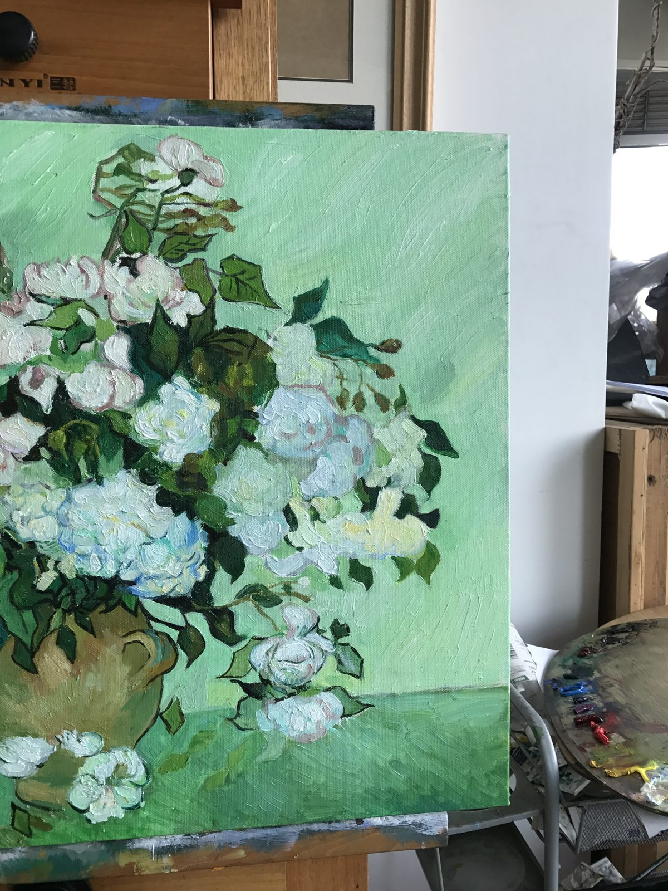
Roses, after Van Gogh
OilA study of Van Gogh’s white roses on a green ground.
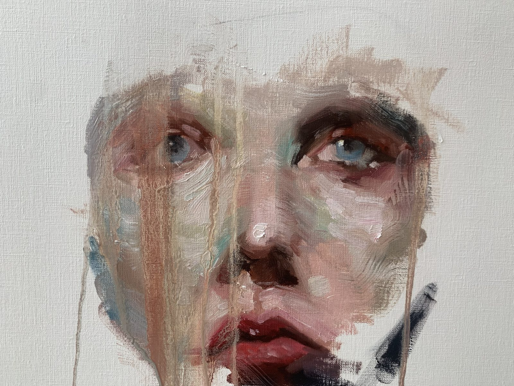
Drip
OilExpressive portrait study, letting the paint run.
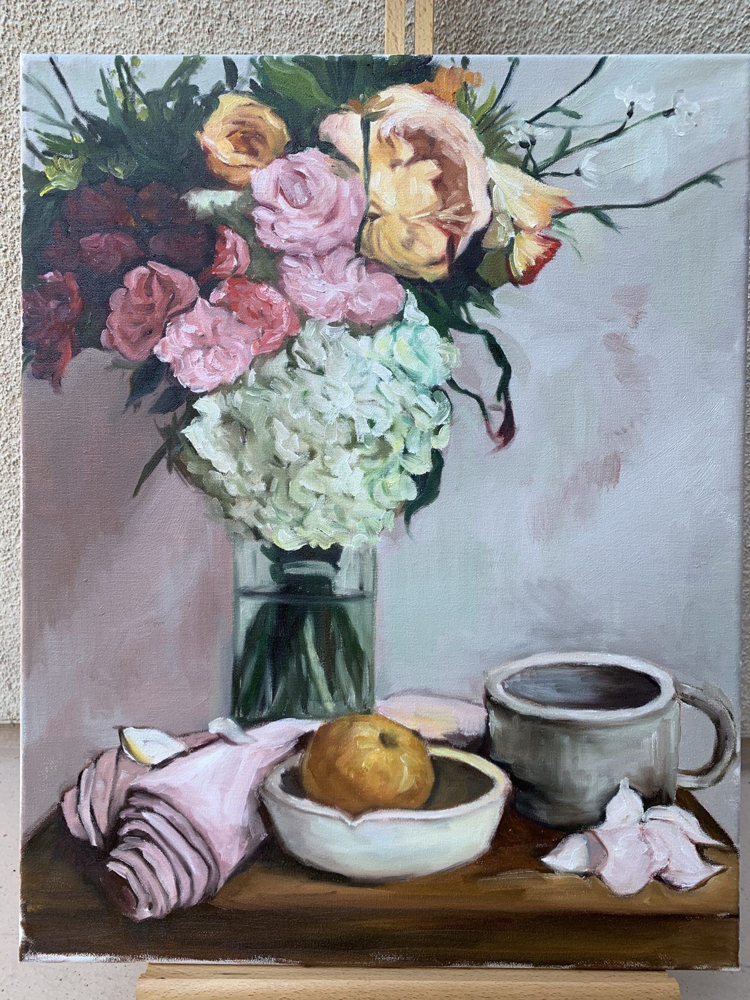
Bouquet with Pink Cloth
OilStill life with flowers, fruit and folded fabric.
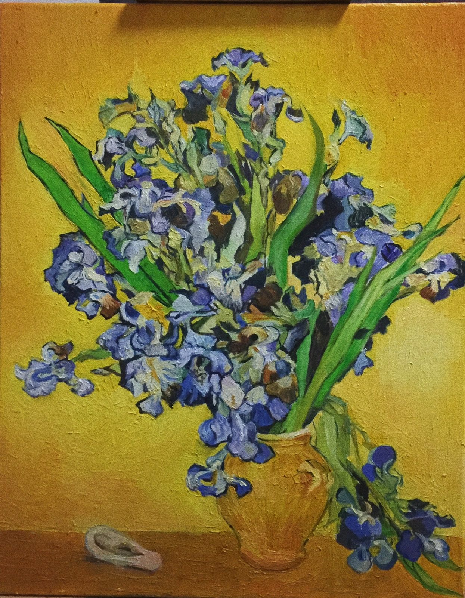
Irises, with an Ear
OilA play on Van Gogh’s Irises — and his ear.
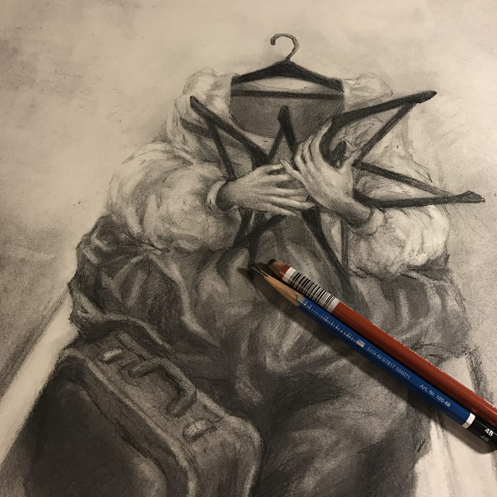
Hands
CharcoalFigure study in charcoal and graphite.
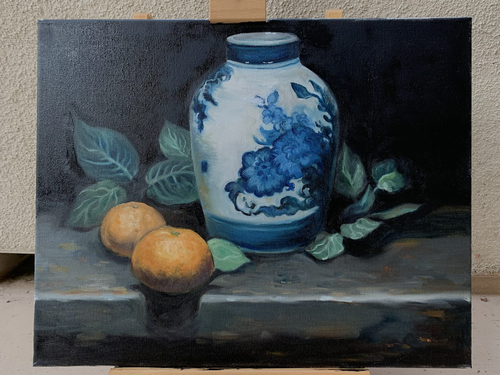
Blue-and-White Vase
OilStill life with a porcelain vase and oranges.
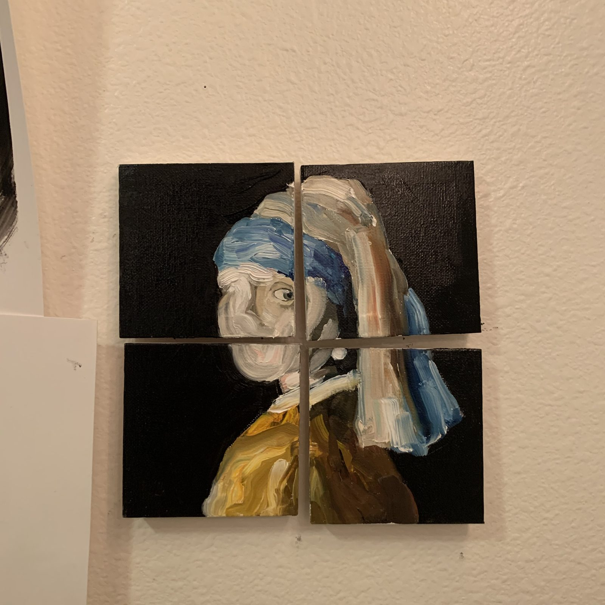
Pearl, in Four Panels
PaintingGirl with a Pearl Earring, reworked across four panels.
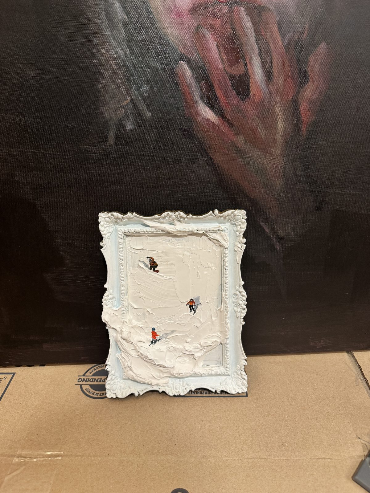
Ski Day
Mixed mediaTextured snow slope with tiny skiers, in an ornate frame.
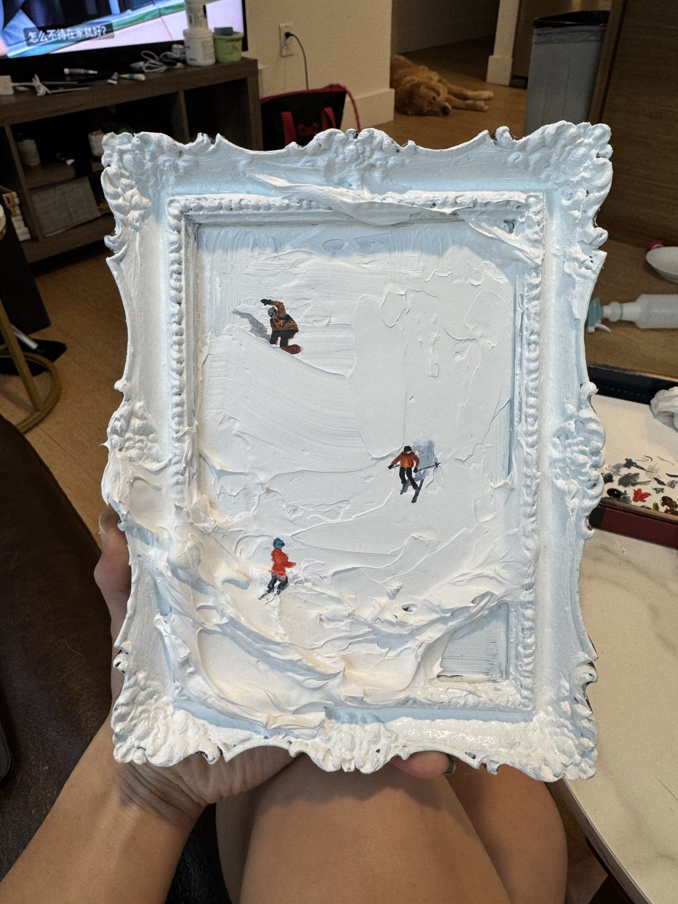
Ski Day (detail)
Mixed mediaClose-up of the slope.
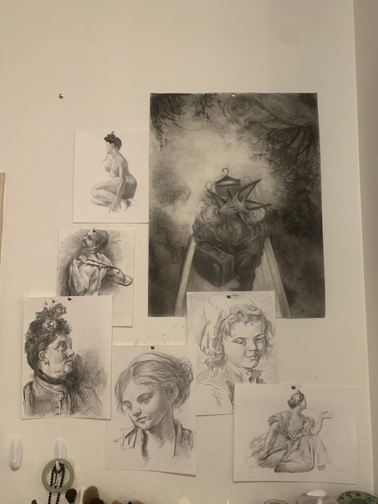
Studio Wall: Drawings
Pencil · CharcoalPortrait and figure sketches.
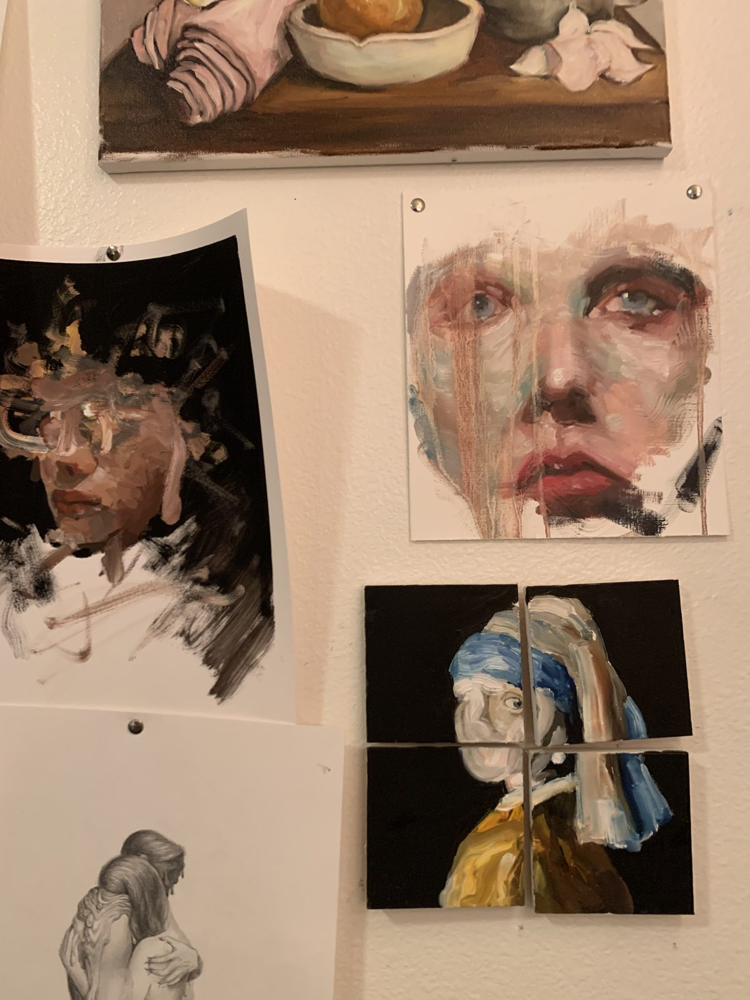
Studio Wall: Paintings
OilWork in progress, pinned up.
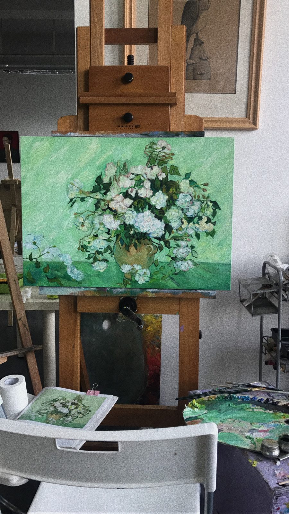
On the Easel
StudioThe roses mid-way.
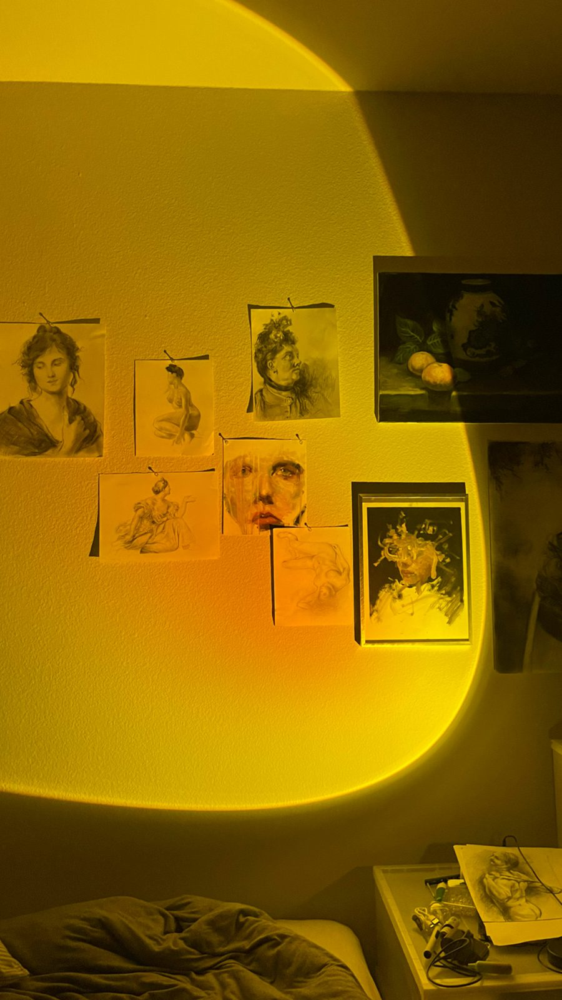
Studio, Evening
StudioThe wall under a sunset lamp.